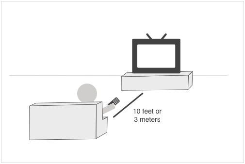
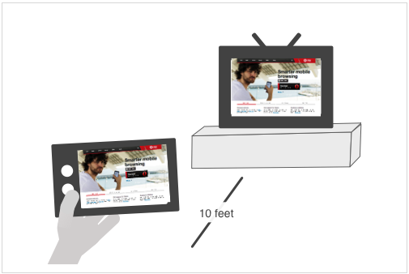
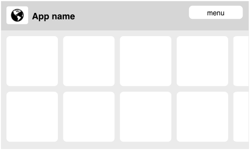
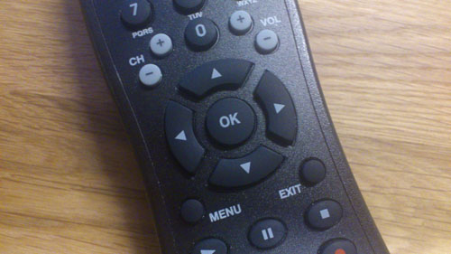
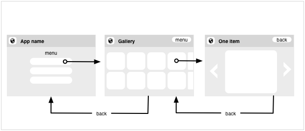
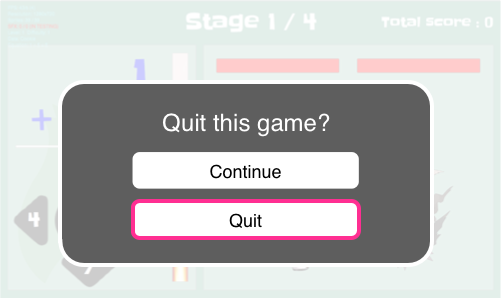
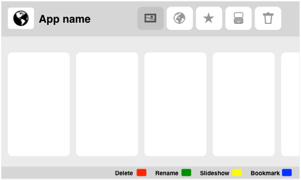
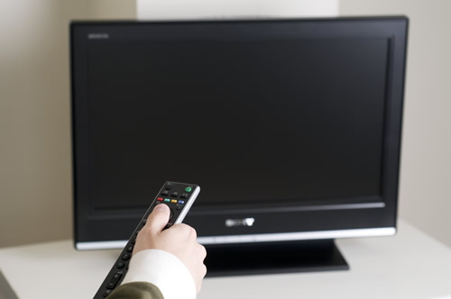

Design considerations for Opera TV Store applications
- Introduction
- Quick checklist
- Potential of the TV context
- Simplicity
- User distance
- Resolution and overscan
- Layout
- Navigation/Controls
- Text input
- Responsiveness
- Privacy
- Testing/App submission
Introduction

The Opera TV Store dashboard
The Opera TV Store offers a platform for delivering HTML5-based applications to customers on TV.
Although TV Store applications are, in essence, nothing more than web pages, there are certain design considerations related to the TV context in general, and the Opera TV Store model in particular, that developers need to take into consideration.
Quick checklist
This is a summary of our recommendations for an optimised TV Store application experience:
- Keep things simple and consistent
- Less is more – TV screen may be big, but are usually viewed from a greater distance.
- For best legibility and usability, use sans-serif fonts at a size of at least 22px and make your selectable elements at least 34px in height.
- Make sure your application works at a size of 1216×684px (leaving a 5% margin on the Opera TV Store's resolution of 1280×720 to account for overscan).
- Make everything accessible with the standard remote control keys: UP, RIGHT, DOWN, LEFT and BACK – other keys (specifically, the color keys found on most connected TVs and devices) are optional and should only be used as shortcuts.
- Ensure that the highlight/outline that indicates the currently selected element is clearly visible at all times.
- Avoid the need for the user to enter text.
- Make an application feel more responsive by giving quick feedback to the user actions.
Potential of the TV context
The context of use of a TV is very different from the one for desktop computers or mobile phones. When you make an application for TV you should consider that:
- TV is mostly used for entertainment and relaxation. Users prefer to avoid too much interaction or decision making.
- The TV is located far from the user and the only means of interaction is the remote control.
- TV interfaces resemble mobile interfaces because of the simplicity, however, TV interaction has to be modified to work with the remote control (4 key navigation).
- Unlike other devices, TVs are social devices where privacy is very limited.
- The strength of TV is in beautifully displaying big images, videos and sound. Your application should take advantage of these strengths.
Simplicity
Keep things simple — people love simple. Complicated interfaces confuse and frustrate people, and this issue can be compounded on TV apps. You want to give people videos? Show them on the first page. If your videos are more than a click or two away, your users will quit your app and turn on the Discovery Channel instead.
If your app can do everything, it cannot do anything. Limit the number of functions your app has to one or two and do those well, rather than being mediocre at lots of things. The user will be happier, and you will have less code to debug. For example, do you need a Twitter box inside your music app? music? Will your users add comments underneath photos, when there are thousands of other photos to see as well? Should you provide drawing tools inside your photo app, or just do that side of things in a separate app perhaps on a different system?
Some more laws of simplicity:
- Try not to make an application that has more than 3 levels of depth. If needed, make more menu elements.
- If your application has more than 3 levels of complexity, it is even more important that the menu or the menu items are visible at all times.
- Don't forget to include an "Exit" item in the menu.
- Keep things consistent across multiple views, like button controls and menus.
- In general, opt for a simple solution. A sophisticated 3D world may sound like a good idea, but will likely run inconsistently across devices, and be less effective than some nice drawings and humorous text.
User distance

10-feet user experience: A user sits 10 feet away from the TV.
TV interfaces are also known as 10-foot user interfaces because 10 feet (3m) is the aproximate distance that users will sit from the TV. For designers, this means that the "big screen" cannot really be considered "big" but that you have to keep the same considerations that you have when making a mobile application:
- All application elements and text need to be bigger than those used for computers. We recommend a minimum text size of 22px, though you may be able to go as low as 18px if your design does not accommodate a bigger font. Considering that you need approximately 10px of padding for your buttons, we recommend them to be of a minimum size of 34px height.
- Fonts should be big and clean. We recommend using simple sans-serif fonts.
- More empty space is needed between elements to avoid items blending into each other from a distance and creating clutter.
- There should be enough contrast between the background and the application elements. This is especially important when you use a fullscreen photo as a background.
- When items are selected, the highlight should be visible and clear so that there is never any doubt what is selected.
- Light content on a darker background is usually easier to read/view on a TV.
- Do not be tempted to think that a bigger screen means that you can include more content. Less is more. Only include relevant content, and keep the amount of content on each screen to a minimum.

A TV in the distance is not much bigger than a close mobile screen.
Although TVs are similar in perceived size to a mobile device, it is not enough to take the design of a mobile application and expect it to always work well on a TV:
- The mobile screen can be vertical and horizontal; a TV is only horizontal and, in some cases, widescreen.
- By being far away and controlled by a 4-way remote, all interactions made for touchscreen have to be reviewed and designed.
Resolution and overscan

If you don't consider the overscan, part of your application will be out of the screen.
The Opera TV Store runs at a resolution of 1280×720px. However, due to overscan, you should ensure that your application works and displays correctly at a size of 1216×684px.
All of today's TV sets have a certain amount of overscan, meaning that margins of your application are shown outside the visible area of the TV. While it is possible for users to turn off overscan, it is better to design your application with this invisible margin in mind, as most users are likely unaware of this option. The overscan amount varies between TV sets but it is advisable to assume that a 5% margin might not be visible to the user.
We recommend that you test your applications with overscan both turned on and off.
Layout
The layout of a TV application should be simple:
- The best position for the menu elements is on the top or the left side.
- Keep the layout as simple as possible: menu and container (list, grid, one item, etc).
- Keep all related functionality and information together. For example, if you have information about a game score, keep all those in the same side / corner instead of scattering them around the screen or grouping them with other elements that are not relevant.
- Remember the basics of graphic design and review that your applications follow them: alignment, proximity, balance, consistency, contrast and whitespace.
Examples
To design the layout for your application, we recommend to have a maximum of two groups of items on the screen: the menu and the content. You can also have the menu in its own screen and dedicate your entire screen to the content.

Example of a TV app where the menu is on a separate screen

Example of a TV app with horizontal layout

Example of a TV app with vertical layout
Navigation/Controls
TV users are usually limited to a simple four-way spatial navigation (UP, RIGHT, DOWN, LEFT) with a regular remote.

Everything should be accessible with the directional keys, OK and Exit (also labelled BACK on certain remotes)
Although all-purpose web browsers on connected TVs may support a combination of spatial navigation and the use of a virtual mouse pointer, only spatial navigation is supported in the Opera TV Store.
You should strive to make navigation as simple as possible. Navigation usually works best with a rectangular/list design, where it is very clear which item is above/below, and to the left and right, of the selected item. Avoid navigation that requires users to jump diagonally to another item.
Avoid mixing vertical and horizontal navigation. It is better to rely solely on either horizontal or vertical columns, rather then mixing the two. Avoid putting content that is critical for user navigation at the top, or at the end, of a list; otherwise, users may be forced to go through the list to select it.
Horizontal navigation is often preferable because of the TV's landscape orientation and aspect ratio, but this will depends on the application.
Try to avoid elements that need to be enabled or clicked first before being able to interact with them. For example, do not make a list that you need to click first to be able to navigate through it. If you have an element that contains sub-elements (for example, in a list) make it visually obvious that you need to click the item first, before you can select sub-elements.
As a last point, remember that the TV remote already has rather convenient volume/mute controls, so you generally don't need to code those into your application. It sounds almost too obvious to say, but we've seen more than enough examples of superfluous volume controls.
The BACK key
The BACK key on the remote control works just like it does in a desktop browser. Users will be familiar with this key and expect it to bring them to the previous screen of the application. If needed, you can still provide a visible back button in the application.

Navigation between screens using the BACK key
The ultimate goal of the BACK key is to take you out of the application. If possible, the application should save the current state and quit but, if this is not possible theBACK key should bring forward a dialog asking if the application should continue or quit.

BACK key pressed when playing a game that cannot be stopped
Shortcuts
We recommend that all functionality is accessible with normal navigation using the directional keys. Color keys should be considered as "nice to have" shortcuts. Most people don't bother learning shortcuts, and, depending on the particular remote control used, the color keys may not actually be located at a convenient position.
Color-key shortcuts are good to have in situations when you have an action that you are likely to do often but that might require many clicks to get to. This, however, also means that it is not always best to use all of the color keys, as users are more likely to remember one or two of them but not all four. Keeping all four shortcuts might mean the users don't learn any of them. How many you use will depend on each application.

Example of the placement for a shortcut key legend
Text input
Historically, TVs have required very little interaction other than changing channels or volume settings. Even if remotes are becoming more advanced, they are still relatively primitive and are rarely optimized for text input.

A remote control uncomfortably close to the TV
Some TVs are shipped with external keyboards, but users are most likely to just be using the remote control. We recommend designing your application in such a way that avoids the need for text input as much as possible. Here are a few suggestions:
- Provide viewing content suggestions to the user rather than relying on searching.
- Make it possible to navigate to content through logical categories.
- Always include "smart" autocompletion in search/edit fields, if this is possible.
- Let the user choose to stay in a logged-in state in applications that require login. This option could be given as a pre-selected "Keep me logged in" checkbox on the login screen.
Responsiveness
TVs are still running on relatively low-end hardware. TV remotes are also still relatively unresponsive. This makes it extremely important that your applications feel as responsive as possible, to avoid creating an additional bottleneck. Here are a few things to keep in mind:
- Make selection highlighting very visible, so the viewer never needs to spend time looking for it.
- Always include some kind of progress indicator if the operation is not instant.
- Make sure animation is not at the expense of performance. If an animation is not smooth, or adds a performance bottleneck, disable it.
- Always give feedback to a user action by changing the state of the affected element, showing a loading indicator, or using sounds.
- Do not force actions on focus that will take time — especially on a limited power device, such actions will make an app feel sluggish and unresponsive. Your awesome app might use different categories or channels to group content, but don't switch between them on focus — let your users decide to switch by pressing OK.
- Full page reloads can look ugly and feel sluggish, particularly on a 70 inch TV, so if at all possible it is usually better to update content/views using Ajax on a single page, rather than using multiple pages.
We highly recommend that you test your application on an actual TV.
Privacy
Mobile phones are personal devices that are not commonly shared. Desktop computers can be shared, but the operating system provides interfaces to change the currently active user, and the device is mostly used by one person at a time. TVs are social devices, placed in a common location of the house and too big to cover if you want to hide some information. This has implications for TV application design:
- In most cases, users will not want to type their personal information on a TV application, especially if this is sensitive information such as passwords or credit card numbers. For these services, allow users to create their accounts on the desktop version of your website and make it easy to link their accounts to the TV application.
- Allow users to clean their viewing history easily.
- Plan your applications for concurrent use and interaction by multiple people (e.g. multiplayer games, adding items to a shared playlist)
Testing/App Submission
Before submitting your app to the app store, and preferably as early on in your development process as possible, give it some proper testing. You should make sure it works across the different target devices your target audience will be likely to use, sure, but you should also do some user testing. Let you neighbour play with it. The waitress/waiter in your favourite coffee place. Your boss. Watch and observe, how they do actions, how they try to accomplish actions and learn from it. Improve your app as a result.
Last but not least, take a few seconds to read our documents about app submissions:
- Functional key handling in Opera TV store applications
- Design considerations for Opera TV store applications
- Opera TV store acceptance criteria
Adhering to these guidelines will make store acceptance of your app a lot easier and quicker.
This article is licensed under a Creative Commons Attribution 3.0 Unported license.
Comments
No new comments accepted.